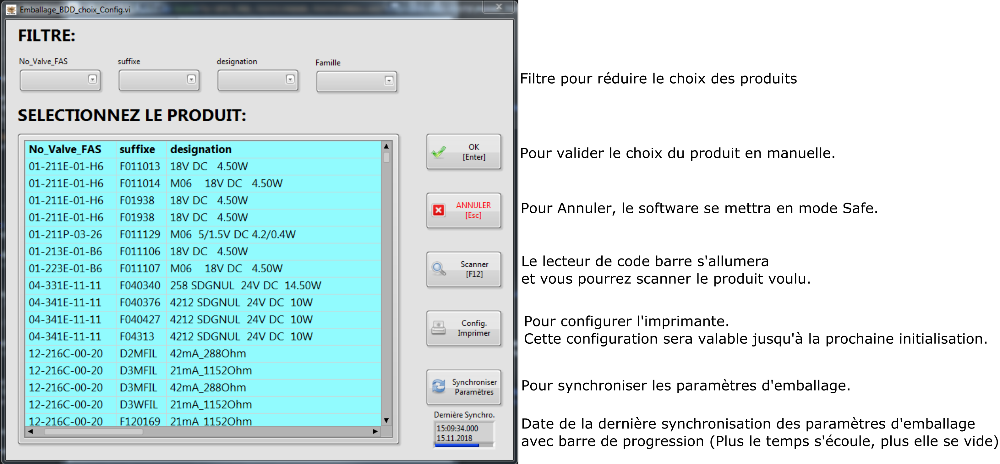
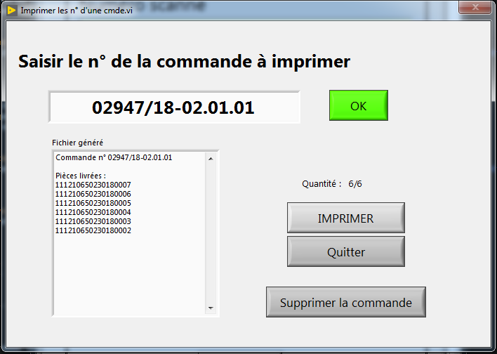
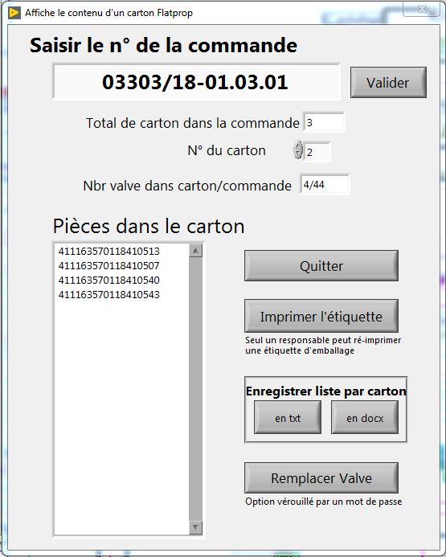
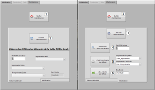
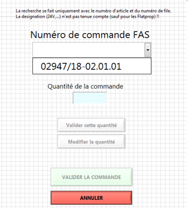
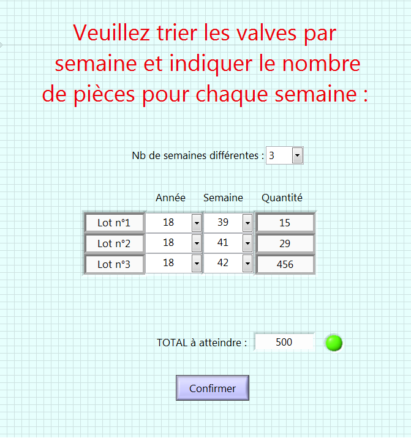
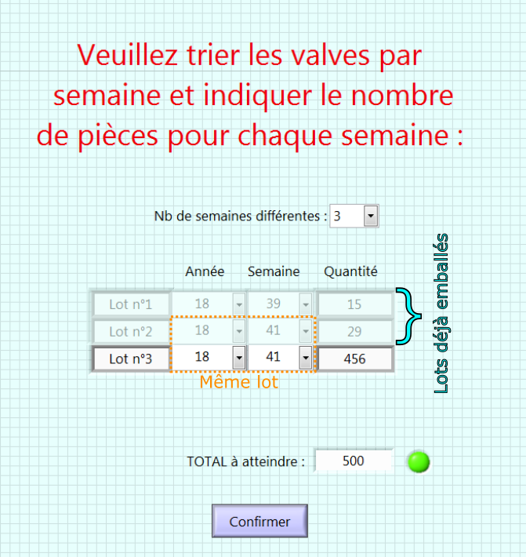
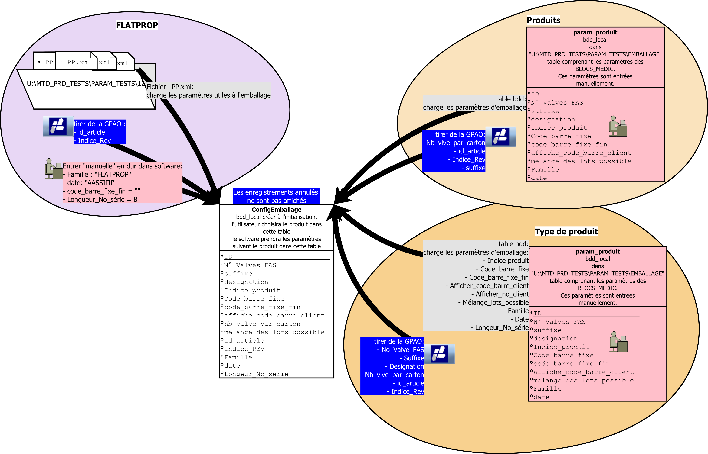

L'objectif principal de ce software d'emballage est de remplacer les 2 softwares d'emballage (1 pour les FLATPROP + 1 pour le MEDIC).
Les données d'emballage sont enregistrées dans une table BDD unique (dbo.PRODUIT_EMBALLAGE).
Une vérification de tous les tests effectués sur le produit est faite avant d'emballer à fin d'assurer un produit conforme.
Le programme d'emballage s'ouvre dans l'onglet Production.
La fonction principale de ce programme est de vérifier si les valves/blocs ont été testé bonne et d'enregsitrer les données d'emballage en base de donnée.
Avant toute chose un vi va apparaître. Ce vi sert à choisir le produit qu'on veut emballer. Ci-dessous le vi " choix_Config" et à sa droite une description de chaque commande:

Vue du Vi "Choix_Config"
Il y a aussi des fonctions secondaire dans le software d'emballage. Ils sont accessible que pendant la période où on scanne les pièces pour les emballer. Ces fonctions sont énumérés ci-dessous:
Cette fonction énumère les pièces d'une commande après avoir saisi un n° de commande et valider avec "OK".
Il est possible d'imprimer cette liste et de supprimer la commande dans la base de donnée SQL.
Cette dernière option (supprimer) est seulement disponible aux responsables.

Vue du Vi "imprimer les N° d'une commande" (avec N° cmd: 02947/18-02.01.01)
Cette fonction énumère les pièces dans chaque carton en fonction d'une commande.
Un responsable peut réimprimer une étiquette d'un carton.
Il est possible d'enregistrer le fichier "listeParCarton" en format text (txt) ou word (docx).
Ces fichiers vont s'enregistrer au chemin suivant "U:\MTD_PRD_TESTS\EMBALLAGES\PRODUITS\RAPPORTS\listeParCarton".
Il est aussi possible de remplacer une valve ou même de la supprimer en base de donnée. Cette option est vérouillée par un mot de passe. Un sous-chapitre lui est consacré.

Vue du Vi "afficher le contenu d'un carton" (avec N° cmd: 03303/18-01.03.01)
Ce vi permet la suppression ou le remplacement d'une valve dans une commande.
Ci-dessous, une image illlustrant le vi "remplacer 1 valve"
Vue du Vi "remplacer 1 valve" (avec SN_PRODUIT: 111210650230180003)
Pour supprimer ou remplacer une valve, il faut que la commande ne soit pas bouclé dans la GPAO.
C'est-à-dire que la commande est bouclé lorsque la case "contrôle" de la commande est coché dans la GPAO (Voir image ci-dessous). Il n'y a pas de garde fou! Aucune vérification de test est faite sur la valve remplaçante
Cette fonction énumère les pièces en cours d'emballage.
En entrant un No de pièce valide dans le champs "Sélectionner l'élément", la pièce sera mise en évidence dans la liste.
Cette fonction énumère toutes les pièces déjà emballées du produit sélectionné.
En entrant un No de pièce valide dans le champs "Entrez le No de la pièce ...", la pièce sera mise en évidence dans la liste.
Le mode maintenance est protégé par un mot de passe.
Avant d'afficher l'onglet, une console va s'ouvrir et va chercher les imprimantes zebra visible sur le réseau.
Dans cet onglet, il est possible de:
Quitter le mode maintenance (pour aller en mode Safe)
Lire la table bdd local
Initialiser la table hardware
Rechercher le Port Com du lecteur de code barre
Choisir les imprimantes par défaut (1 pour imprimer les étiquettes et l'autre pour les certificats)
(choisir l'imprimante dans la liste déroulant avant de cliquer sur le bouton)
Choisir le décalage à droite par défaut de l'imprimante

2X l'onglet Maintenance permet de voir les 2 onglets de la commande onglet
Vous constatez que dans ce mode, il y a une commande onglet qui comporte 2 onglets:
Valeur table bdd: pour la lecture des données de la table bdd local
Initialisation: Pour initialiser les différents paramètres (imprimante, port com, ...)
La liste des commandes contient les commandes de la GPAO qui n'ont pas encore été facturée et qui n'apparaissement pas dans l'historique des commandes.

VI "nouvelle série" avec liste des commandes
Pour la recherche des commandes, on cherche en fonctions de plusieurs champs. Ces champs changent en fonction du type de l'article:
Pour les articles qui commencent par "12"(FLATPROP) et "17"(FASPROP)
NO_ARTICLE
NO_FILE
DESIGNATION
Pour les articles qui commencent par "01"(Microsol) et "04"(Bacosol)
Il est possible de créer une commande interne pour tous les produits. Cette commande est enregistrée dans la table des données d'emballage mais nullement dans la GPAO.
Le numéro de la commande interne suit la loi suivant: JJMM/AA-hh.mm.ss
Il n'est pas nécessaire d'entrer la quantité d'une commande interne. Pour arrêter la série, il suffit de scanner 2 fois la même pièce ou de quitter la série (bouton quitter).
A la fin de la série, le software vous indique le nombre de pièces dans la commande interne créée précédemment.
Aucune étiquette d'emballage est crée pour les commandes internes ni de fichiers "numéroSérie".
Pour certains produits (comme la F120078), il n'est pas autorisé de mélanger les lots lors de la livraison.
Pour ces produits, il faut préciser les différents lots constituant la commande.
Ci-dessous, la vu du vi où l'on précise l'année, la semaine et la quantité des lots.

Vu du Vi "tri des lots" pour commencer une commande
Il se peut que la commande ne soit pas/ne peut pas être emballée d'un coup. Nous pouvons donc reprendre la commande mais attention aux recommendations suivantes:
Le nombre de cartons peut varier en fonction des lots (quantité par lots, nombre de lots).
Il ne sera pas possible de continuer un lot plus vieux si un lot plus récent a été emballé.
Exemple: Vous avez emballé le lot 1841 ensuite vous commencez à emballer le lot 1839. Vous arrêtez la série et vous la reprenez, il sera impossible de continuer le lots 1839.
Si vous ne savez pas la quantité du lot, mettez la valeur maximum.
Il sera possible d'imprimer l'étiquette du dernier carton lors de la reprise de la commande.
Pour continuer un lot, il suffit d'entrer la quantité restante
Ci-dessous, un exemple pour continuer un lot.

Vu du Vi "tri des lots" pour continuer une commande
Cette table sert à faire la correspondance entre le produit et sa/ses table(s) d'enregistrement de résultat.
Après une discution avec M.Evan Alon (AEV) le 22.08.2018, plusieurs tables ont été créées:
EMB_CORRESPONDANCE_TABLE: Table principale pour la correspondance.
Pour éviter "les doublons", lorsqu'un champ est récurrant, une table à part est créée (un ID par valeur de champs différents)
et l'ID est enregistré dans la table "EMB_CORRESPONDANCE_TABLE"
Tables secondaires (corrrespondance entre ID et la valeur du champ):
EMB_FAMILLE_VALVE: correspond au nom du champs des familles
EMB_CHAMPS_VALVE: correspond au nom du champ des numéros de valves/produits
EMB_CHAMPS_CONDITION: correspond au nom du champ des conditions
EMB_VALEURS_CONDITION: correspond à la valeur du champ des conditions
EMB_CHAMPS_RESULTAT: correpond au nom du champ du résultat
EMB_CHAMPS_ORDRE: correspond au nom du champ ordre
Ce champ correspond principalement au champs de la date. Il est trié par ordre descendant pour avoir le dernier enregistrement en 1er.
Ci-dessous les différentes tables (secondaires) de correspondance remplies (entre parenthèse: date de l'image): Table "EMB_FAMILLE_VALVE" (20200225)Table "EMB_CHAMPS_VALVE" (20200225)Table "EMB_CHAMPS_CONDITION" (20200225)Table "EMB_VALEURS_CONDITION" (20200225)Table "EMB_CHAMPS_RESULTAT" (20200225)Table "EMB_CHAMPS_ORDRE" (20200225)
Ceci dessous-la table "EMB_CORRESPONDANCE_TABLE" comme enregsitrer en BDD: Table "EMB_CORRESPONDANCE_TABLE" (20200225)
Ceci dessous la table "EMB_CORRESPONDANCE_TABLE" en replacant les "ID" par leurs valeurs.
C'est-à-dire en utilisant les tables secondaires. Table "EMB_CORRESPONDANCE_TABLE" avec tables secondaires (20200225)
Cette table réunit tous les paramètres nécessaire à l'emballage.
Vous trouverez plus d'information sur les parmètres d'emballage au chapitre suivant.
Cette table a un lien avec la table "EMB_FAMILLE_VALVE".
Ceci dessous-la table "EMBALLAGE_PARAM" comme enregsitrer en BDD: Table "EMBALLAGE_PARAM" (20200225)
Ceci dessous la table "EMBALLAGE_PARAM" en replacant les "ID" par leurs valeurs.
C'est-à-dire en utilisant les tables secondaires. Table "EMBALLAGE_PARAM" avec tables secondaires (20200225)
Il est possible qu'on veuille rajouter un type de valve (par exemple: FASPROP "17_2").
Pour cela, il suffit de mettre dans le champs "NOVALVE_FILTRE" une partie du No_Article suivi d'un "%" (exemple: 17_2%).
Le champ "indice_produit , il est possible de rajouter un séparateur.
Pour cela, il suffit de séparer le nom du champ ("champ_NomDuChampOuOnTireLInfo") et le séparateur (;) par un point-virgule(;).
(Par exemple pour FASPROP, le code barre est un 2D qui suit la règle suivante: "ID_ARTICLE;INDICE_GPAO(numérique);DATECODE(AASSIIII);Facultatif")
Pour le champ "indice_produit, la valeur retournée par la GPAO sera transformé en numérique (a = 1, ... , z = 26).
Certains produits ne font pas de test (ou les données de test ne sont pas enregistrées en BDD) mais comporte une étiquette pour la traçabilité à l'emballage.
Pour identifier ces produits, la valeur du champ Famille doit commencer par "NoTest".
(Exemple: 04-341E-11-11 F04313 4212 SDGNUL 24V DC 10W)
Cette table concerne les informations sur les code-barres des produits FAS.
Comme pour la table "EMB_CORRESPONDANCE_TABLE", des tables secondaires ont été crées pour éviter les redondances:
CODE_FORMAT: correspond au format/type du code-barre
CODE_FORMATDATE: correspond au format de la date
Ci-dessous, un tableau explique la codification du champs "date":
Code
Description
A
Année
M
Mois
S
Semaine
Q
Quantité livrée
I
"Index"
Ci-dessous les différentes tables (secondaires) de correspondance remplies (entre parenthèse: date de l'image): Table "CODE_FORMAT" (20200225)Table "CODE_FORMATDATE" (20200225)
Ceci dessous une partie de la table "CODE_GESTION" comme enregsitrer en BDD: Table "CODE_GESTION" (20200225)
Ceci dessous une partie de la table "CODE_GESTION" en replacant les "ID" par leurs valeurs.
C'est-à-dire en utilisant les tables secondaires. Table "CODE_GESTION" avec tables secondaires (20200225)
Ci-dessous quelques explications pour les champs:
codebarre_fixe: partie fixe du code barre
codebarre_fixefin: partie final du code barre fixe
le code barre fixe se compose de 3 parties:
codebarre_fin + indice_produit + codebarre_fixe_fin
Elle n'est pas prise en compte lors du choix du produit par scannage.
longeur_no_serie: le nombre de dernière chiffre qui vont être imprimer sur l'étiquette
Si ce champ n'est pas remplis, la valeur par défaut est 0.
Cette table est utilisé pour les données qui ne méritent pas une table dédiée.
Table "EMB_META" (20200225)
Par exemple, les données d'emballages des articles avec la cle "ListeDREAGER" vont dans un fichier supplémentaire.
Avec cette table, nous pouvons rajouter des articles pour ce fichier supplémentaire.
Nous pouvons aussi avoir un autre fichier supplémentaire.
Il y a plein d'utilisation pour cette table...
Le chargement des paramètres se fait obligatoirement pendant l'initialisation.
Il y a la possibilité de forcer la synchronisation lors du choix du produit par le bouton "Synchroniser Paramètres" en bas à droite.
Ce bouton clignote si la synchronisation des paramètres n'a pas eu lieu dans les 23 dernières heures.
Le chargement des paramètres d'emballage se fait de plusieures manières.
Ci-dessous, vous trouvez un petit schéma expliquant les différentes manières de charger les données:

Diagramme expliquant le chargement des paramètres d'emballage
Pour les FLATPROP, il va chercher une partie des informations dans les fichiers "_PP.xml" sur le réseaux au chemin "U:\MTD_PRD_TESTS\PARAM_TESTS\12". D'autres informations sont en dur dans le programme ou tiré de la GPAO.
Pour les Autres produits, il va chercher une partie des informations dans des tables BDD (nommé EMBALLAGE_PARAM et CODE_GESTION). Cette base de données est créée manuellement. Le reste des informations est tiré de la GPAO.
Lors du choix du produit par scannage, si plusieurs produits ont le même code barre, il sera demandé à l'utilisateur de choisir entre ces produits.
(exemple: S122.0008 et S121.0017, le S122.0008 a comme base le S121.0017.)
Les informations tirées des fichiers _PP.xml sont les suivantes:
Indice
Code_Barre_Fixe
melange_des_lots_possible
affiche_code_barre_client
NB_PIECE_EMB
Les informations suivantes sont tirées de la GPAO en fonction du "NOS_ARTICLE", "SUFFIXE", CLC_DESIGNATION.
On trouve ces dernières grâce au nom du fichier _PP.xml.
Pour les autres produits, les informations suivantes sont tirées de la GPAO:
Le reste des informations vient de la table des tables BDD qui sont décrite plus haut.
Plusieurs certificats sont envoyées au client. Ces certificats sont soit envoyé par e-mail ou directement mis dans le carton.
Il n'y a pas de table sqlite car a chaque nouveau produits, il faudra de toute faç0on modifier le soft.
On peut toujours utiliser la table "EMB_META" au besoin comme pour la liste DREAGER.
Les fichiers modèle se trouve sur le réseau au chemin suivant: "U:\MTD_PRD_TESTS\PARAM_TESTS\EMBALLAGE"
Pour le bon fonctionnenement du software, le PC doit être pourvu de Microsoft Office (Word et Excel).
Ces logiciels servent pour la création des fichiers "numéro de série".
Après la première installation, il faudra rechercher le port de communication de lecteur de code barre et définir l'imprimante par défaut.
Pour modifier ces paramètres, il faut aller dans l'onglet maintenance.
Si le programme ne charge pas les données des blocs medic (depuis la BDD), il faut vérifier les fichiers dans le dossier "C:\Support_FAS\Administration".
Il se peut que ce dossier ne soit pas à jour.
Pour le mettre à jour, il suffit de supprimer le dichier "initialisation.xml" et de lancer le soft d'emballage.
Le lecteur Grypgon GFS4470 peut être paramétrer par le logiciel "Aladin" ou en scannant les codes dans la documentation.
Vous trouvez la documentation concernant le Gryphon GFS4470 au chemin suivant: T:\Labo_PLZ\Tools\Datalogic\gryphon
Dans un premier temps, il faut sélectionner l'interface "USB_COM" et le mettre en mode (Reading Parameter => Scan Mode) "Serial On Line".
Pour que le lecteur arrive à lire les étiquettes de FLATPROP (étiquettes hautes résolutions), il faut activer le code "Code ISBT 128".
Il est possible que le lecteur ne lit pas correctement les codes barres 2D. Vérifiez que le lecteur soit bien en clavier suisse.
Astuce: Essaies de scanner les codes barres 2D perpendiculairement au lecteur.
Tu te dis : "J'ai tout lu et mon problème est toujours présent" ?
Félicitation tu t'es donné de la peine pour résoudre ton problème tout(e) seul(e) malheureusement je crois qu'il est temps de demander de l'aide!
Regardes en bas de la page, tu trouveras qui a créer le fichier et a fait la dernière modification. Vas-y lances toi et exposes leur ton problème!
Si cela ne vous a pas aidé, tant pis c'est pas faute d'avoir essayé .